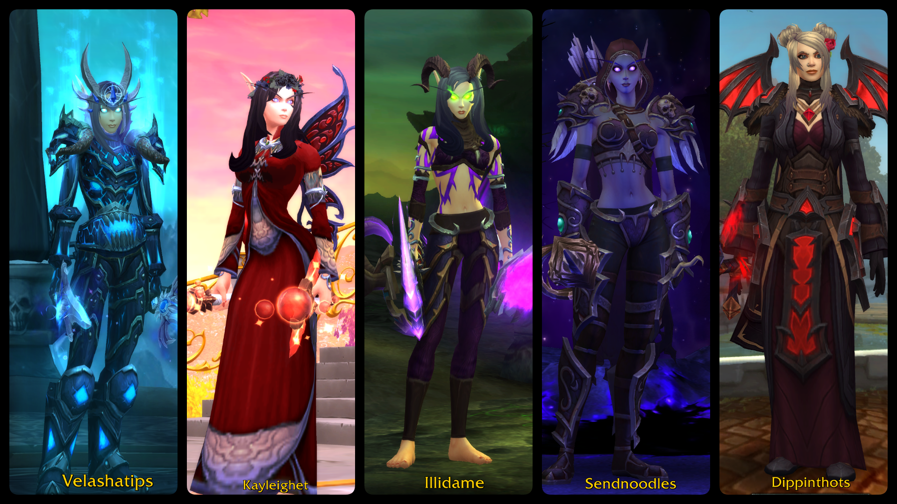

My Toons
Over the years, I’ve played hundreds of characters across a few different accounts, but I always find myself circling back to the same favorites.
When I roll a new toon, my “checklist” usually looks something like this — and the photo below proves it:
- Blood Elf – I can’t resist their elegance and snarky emotes.
- Female –Because why not?
- Caster class – hurling fire, frost, or shadow from a distance just feels right.
- Gothy – dark, moody vibes are basically mandatory at this point.
- Pretty – if I’m staring at a character for hours, they’d better look fabulous.
